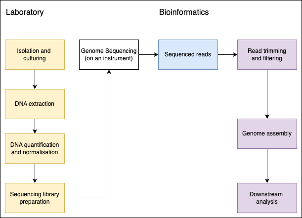
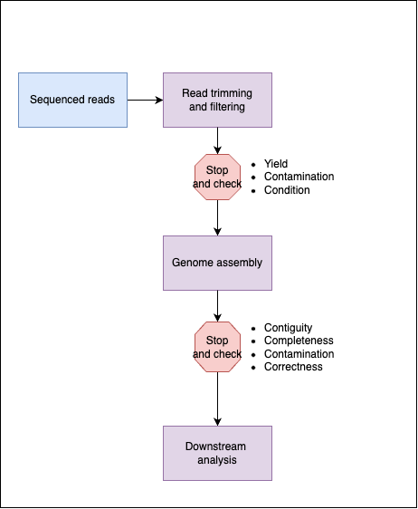
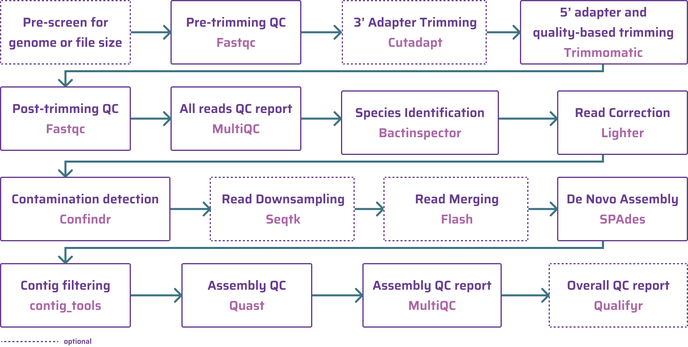

A framework for quality control
When receiving results from bacterial genomics analyses such as genotyping, in silico serotyping, clustering, phylogenetic inference, and predicting antimicrobial resistance (AMR) determinants, you should remember that your data has traversed a laborious and exhaustive journey. That journey could look something like this:

Each of these steps have the potential to introduce errors. Errors which could drastically alter the final interpretation. As a Bioinformatician looking at the data post sequencing, there are two easy oppotunities to assess the quality of the data as it makes it way through our workflow. We should:
- Check the seqeunced reads directly (i.e. the FASTQ output from the sequencing instrument) after simple filtering processes like removing known adapters,
- AND Check the quality of the resulting genome after being assembled from the sequenced reads.

Many bioinformaticians have their own preferred approach for checking data quality. If you ask them for their approach, they will usually list a set of programs without much explanation as to how these tools were selected and what issue they are trying to address. I will try to focus on describing how to approach the problem rather than giving you my own preferred solution. Here is a well described genome assembly pipeline that covers both read quality control and genome assembly quality control.

The pipeline (and figure) are from the GHRU SPAdes Assembly workflow. In my opinion, this is a comprehesive pipeline that produces good results. You are welcome to use it. Hopefully, you can see that in these steps, while cleared named, it is not obvious why these steps are necessary.
When working with genomic data, all quality control tools answer one or more of these broad questions:
- Do I have enough sequenced reads for my work?
- Are the sequenced reads from the organism I am expecting?
- Does the quality scoring, provided by the instrument, meet my expectations?
- Does the genome assembly look like an intact genome from the organism I am expecting?
These four questions can be broken down into seven criteria (with a extra bonus criterion) for quality control of genomic data. Some of these relate to the seqeuenced reads while others apply to the genome assembly.
- Sequence reads - Yield
- Sequence reads - Contamination
- Sequence reads - Condition
- Genome assembly - Contiguity
- Genome assembly - Completeness
- Genome assembly - Contamination
- Genome assembly - Correctness
- Genome assembly - BONUS: Circumstantial
We will break these categories down further in these sections: